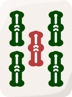
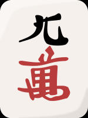
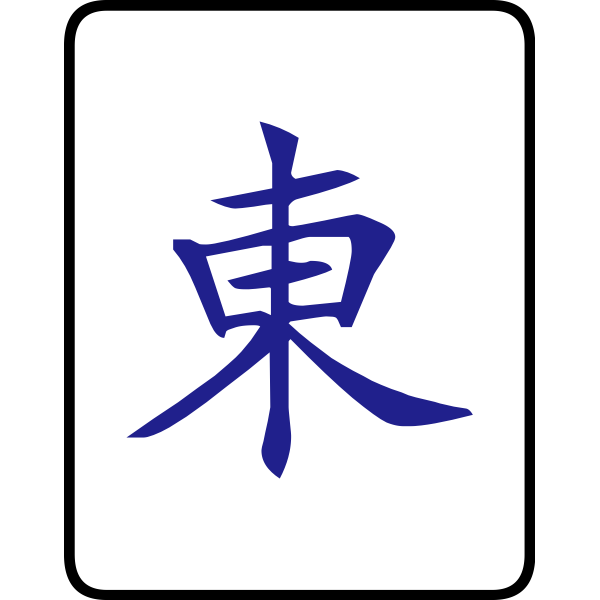
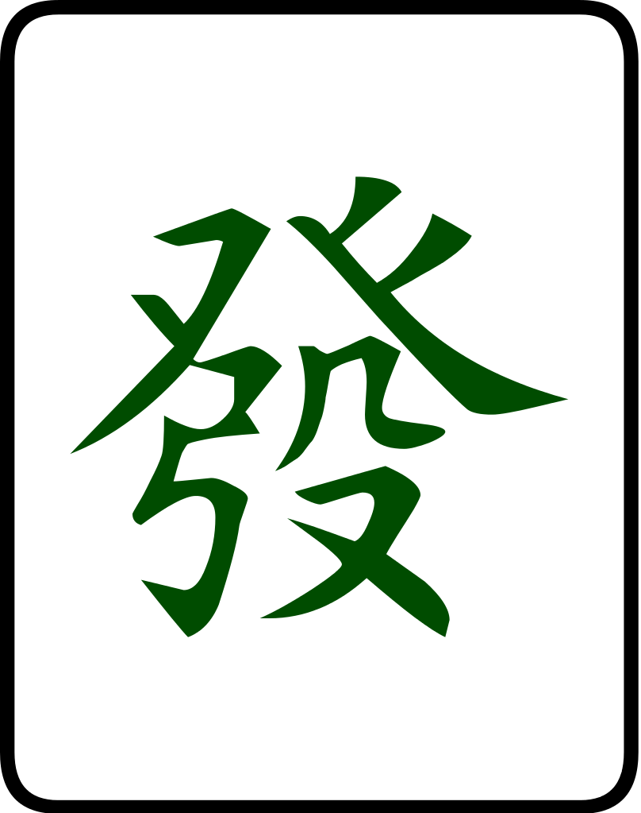

Riichi is a variation of mahjong. While the basic rules to the game are retained, the variation features a unique set of rules such as riichi and the use of dora. The main mahjong article contains general terms, but only English and Japanese terms are used here. Terms like "chow," "pung," and "kong" are not used in this variation, yet their calling functions are still used. In those circumstances, they are referred to in Japanese as chii, pon, and kan.
History
In 1924, a soldier named Saburo Hirayama brought the game to Japan. In Tokyo, he started a mahjong club, parlor, and school. In the years after, the game dramatically increased in popularity. In this process, the game itself was simplified from the Chinese version. Then later, additional rules were adopted to increase the complexity. Mahjong, as of 2010, is the most popular table game in Japan. As of 2008, there were approximately 7.6 million mahjong players and about 8,900 mahjong parlors in the country. The parlors did 300 billion yen in sales in 2008. There are several manga and anime devoted to dramatic and comic situations involving mahjong (see Media). Japanese video arcades have introduced mahjong arcade machines that can be connected to others over the Internet. There are also video game versions of strip mahjong.
What is in Riichi Mahjong?
The Tiles
Riichi mahjong is played with 34 different tiles, of which there are four of each type, to make up 136 tiles used in total. The majority of the tiles consist of the numbers 1 to 9 in three ‘suits’, which are:
Souzu:

aka Sou, Bamboo, Sticks(Note that the 1 Sou is represented with a bird, usually a peacock or owl, rather than a single stick)
Pinzu:

aka Pin, Circles, Dots
Manzu:

aka Man, Characters, Cracks
In addition to the three suits, there are Honour/Value tiles, which are made up of two subsets:
Winds:

East, South, West, North
Dragons:

Green, Red, White